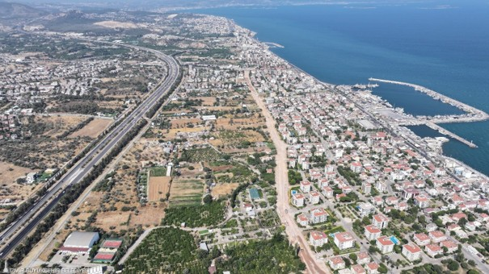
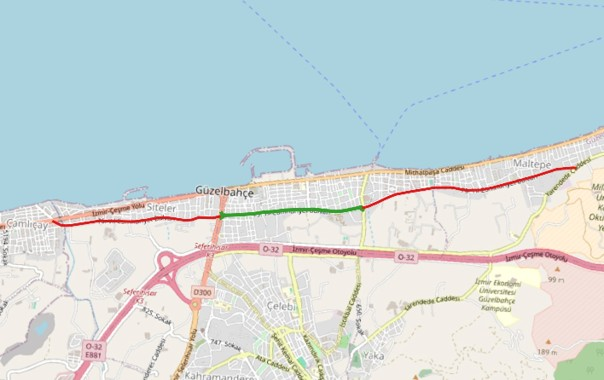
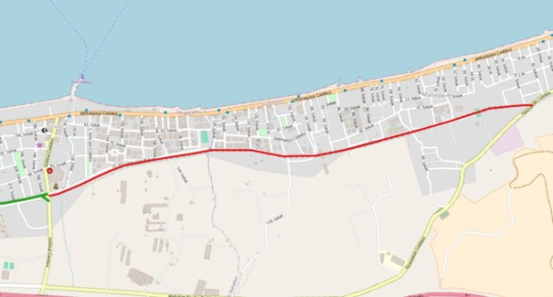
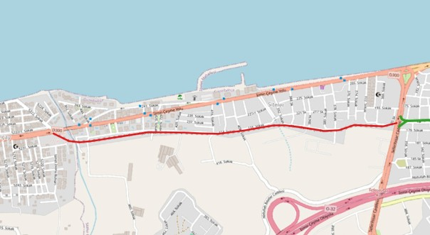
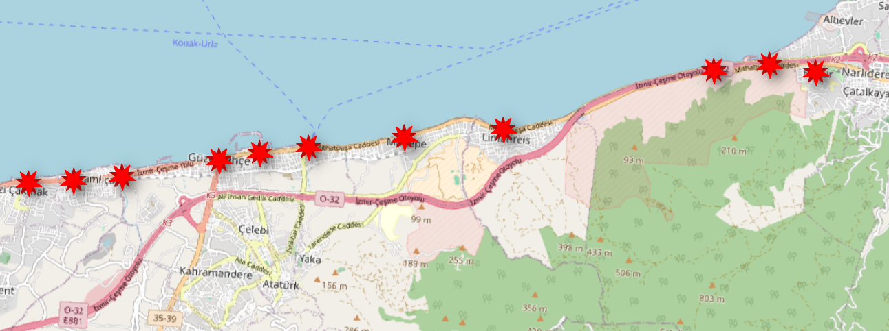
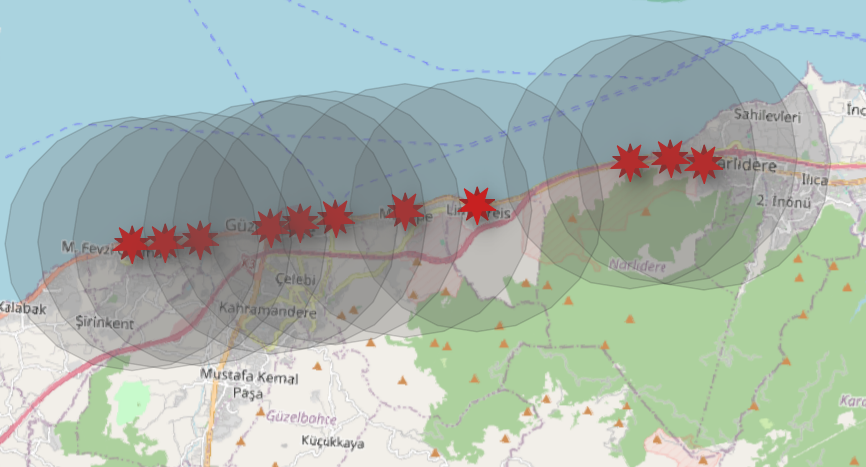
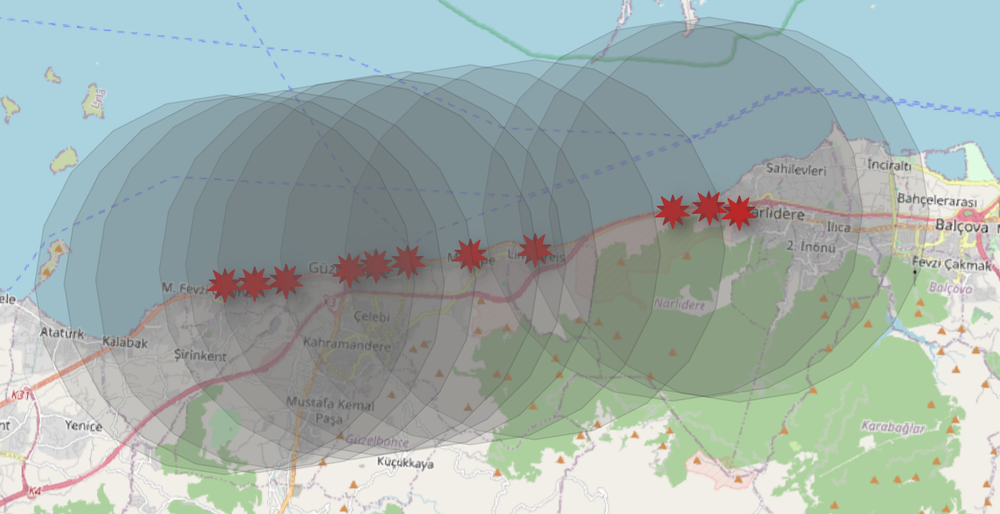

75. Yıl Cumhuriyet Bulvarı Projesi
Sahil şeridi ile iç kesimler arasında paralel uzanan yeni ulaşım aksı
Projenin Temel Amaçları
Trafiği Rahatlatmak
Sahil yolu trafiğini hafifleterek, bölgedeki araç yoğunluğunu azaltmak ve akıcı bir trafik sağlamak.
Kesintisiz Bağlantı
Sahil şeridi ile iç kesimler arasında güçlü bir ulaşım aksı oluşturarak kesintisiz bağlantı sunmak.
Altyapı & Taşkın Önleme
Yol çalışması ile eş zamanlı olarak altyapıyı yenilemek ve bölgede yaşanabilecek taşkınları önlemek.
Proje Etapları ve Uygulama Durumu
Proje genel fiziki görünüm ve toplam 3 etap üzerinden planlanmış olup, etaplara ait güncel durumlar ve alan görselleri aşağıda sunulmaktadır.
Fiziki Görünüm
Projenin genel hatları ve fiziki durumu

1. Etap Tamamlandı
Yalı Mahallesi: İstikbal Caddesi ile Seferihisar Caddesi arası (1,5 km)

2. Etap Planlanıyor
Güzergah ve detaylar eklenecek

3. Etap Planlanıyor
Güzergah ve detaylar eklenecek

Planlanan Metro Hattı
Narlıdere'den sonra planlanan raylı sistem hattı ve durakları
Planlanan Duraklar
Güzelbahçe'de raylı sistem istasyonu bulunmamaktadır; en yakın metroya ESHOT ile ulaşım sağlanmaktadır. Planlanan metro hattı Narlıdere'den sonra 13,6 kilometre uzunluğunda olacak; 11 istasyon yapılması planlanmaktadır.
Planlanan İstasyonlar ve Erişilebilirlik



İzmir raylı sistemler haritası ve metro biniş verileri için İzmir Metro sekmesine bakınız.